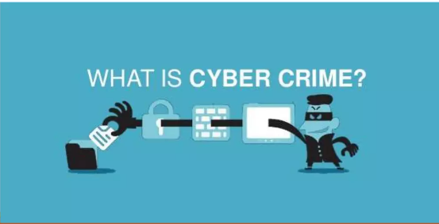
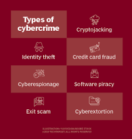

Today, almost everything we do involves the internet. We use it to talk to friends, do schoolwork, and buy things online. But as more people go online, more criminals have also found ways to take advantage of it. Cyber crime is one of the fastest-growing problems in the world right now, and it affects millions of people every single day. It covers many types of illegal activities done through computers or the internet. Knowing what cyber crime is and how it works is the first step in keeping yourself safe online.
What Cyber Crime Means
Cyber crime is any criminal activity that uses a computer, a network, or the internet. In simple terms, it is when someone uses technology to do something illegal. This can be anything from stealing someone's personal information online to breaking into a company's computer system. Cyber crimes can be done by one person working alone or by large groups that operate in different countries. Unlike regular crimes, the criminal and the victim do not need to be in the same place. The internet makes it possible for criminals to attack people from very far away without ever leaving their homes. Because of this, cyber crime is considered a global problem that affects people of all ages and backgrounds.

The Different Types of Cyber Crime
Cyber crime is not just one thing. It comes in many different forms. One of the most common is hacking, which is when someone breaks into a computer or a system without permission. Another common type is phishing, where criminals send fake messages to trick people into giving away their passwords or personal details. There is also identity theft, where someone steals your personal information and pretends to be you, usually to steal money. Online scams, cyberbullying, harmful software, and digital piracy are also types of cyber crime. Some crimes target one person, like stalking or online harassment, while others target big organizations or even governments. No matter the type, all cyber crimes cause real harm to the people or systems they affect.
Who Commits Cyber Crimes?
Many people imagine cyber criminals as expert hackers sitting alone in dark rooms, but the truth is very different. Cyber criminals can be anyone. They can be teenagers looking for fun, angry workers seeking revenge on their companies, or large criminal groups motivated by money. Some are highly skilled and use complex tools, while others use simple tricks that do not need much technical knowledge. There are also hackers who are paid by governments to attack other countries. In the Philippines and many other places, even young people have been involved in cyber crimes, sometimes without fully understanding the legal consequences. Understanding who commits these crimes helps us see that cyber crime is a human problem, not just a technical one.
Why Cyber Crime Is a Serious Problem
Cyber crime is serious because its effects go far beyond just losing money or data. When someone becomes a victim, the emotional pain can be just as bad as the financial loss. Victims of identity theft may spend months trying to fix the damage done to their accounts or reputation. Businesses that are hacked may lose the trust of their customers and suffer big financial losses. On a larger scale, attacks on hospitals or power systems can put entire communities in danger. Cyber crime also costs the global economy a huge amount of money every year, making it one of the most expensive types of crime in the world today. This is exactly why awareness and strong security measures are so important for everyone.
Real-World Impact on Everyday People
It is easy to think that cyber crime only happens to big companies or rich people, but ordinary people are just as much at risk. Students can become victims of cyberbullying or online scams that offer fake scholarships or job opportunities. Parents may fall for fake online shops or social media scams that steal their credit card details. Elderly people are often targeted through calls or messages that pretend to be from banks or government agencies. In the Philippines, online scams and social media fraud have become very common, with thousands of cases reported to the NBI and PNP every year. These real examples show that cyber crime is not a distant threat. It can happen to anyone, at any time, if they are not careful online.
Conclusion
Cyber crime is a serious and growing problem that affects people, businesses, and entire countries around the world. It covers many types of illegal activities done through computers and the internet, from simple scams to complex hacking operations. Anyone can become a victim, no matter their age or location. The good news is that awareness is the most powerful tool we have against cyber crime. By understanding what it is, how it works, and who is at risk, we can take smarter steps to protect ourselves and others online. As you keep reading through this site, you will learn more about the different types of cyber crimes, their effects, and how to stay safe in the digital world. Stay informed, stay careful, and always think before you click.